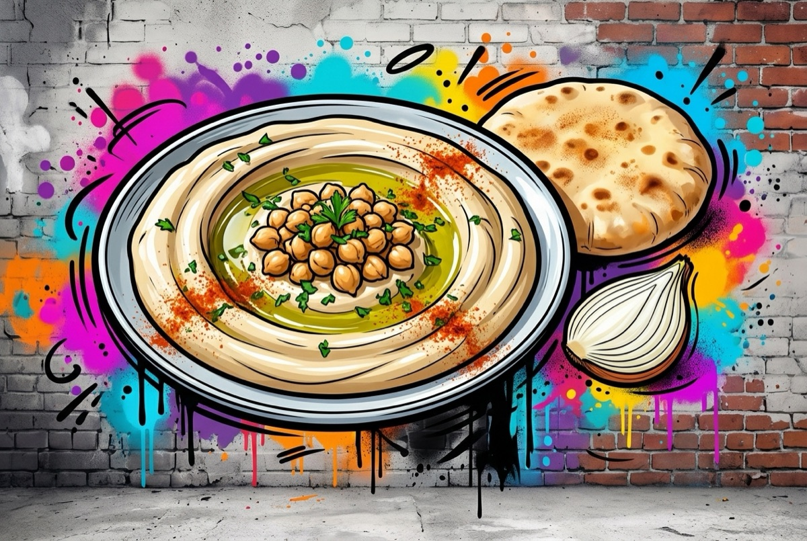

חומוס
השריה 12 שעות · בישול כשעתיים · טוחנים במנות
🌱 פרווהלבישול
- 1 ק"ג חומוס יבש (רצוי זן הדס)
- 1 כפית גדושה סודה לשתייה
- 6 שיני שום שלמות
לכל 2 כוסות חומוס מבושל
- ¾ כוס טחינה גולמית
- ½ כוס ממי הבישול
- מיץ מ-½ לימון
- ¾ כפית מלח דק
- קורט כמון (לא חובה)
להגשה
- 1 כוס גרגירי חומוס מבושלים, שמורים בצד
- פטרוזיליה קצוצה
- שמן זית
- בצל ופלפל חריף
אופן ההכנה
- משרים את החומוס 12 שעות בקערה גדולה עם מים פושרים. מסננים.
- מעבירים לסיר עמוק ומוסיפים מים עד כ-¾ מגובה הסיר. לא להעמיס.
- מוסיפים שום וסודה לשתייה ומביאים לרתיחה על אש גבוהה. מקפים את הקצף.
- מנמיכים לאש נמוכה ומבשלים כשעתיים, עד שגרגיר מתמעך בקלות בין האצבעות. מקפים שוב לפי הצורך.
- מסננים ושומרים את מי הבישול. שומרים בצד כוס גרגירים להגשה.
- טוחנים 2 כוסות חומוס פושר עם ½ כוס ממי הבישול עד שחלק.
- מוסיפים מלח, כמון, לימון וטחינה וטוחנים עוד כמה דקות, עד שחלק לגמרי.
- חוזרים במנות של 2 כוסות עד שנגמר החומוס.
- מורחים בצלחת שטוחה, מפזרים גרגירים ופטרוזיליה ומזלפים שמן זית. מגישים עם בצל ופלפל חריף.
הערות
- נשמר במקרר עד יומיים.
מקור: ynet אוכל (המתכון של נופר זהר)